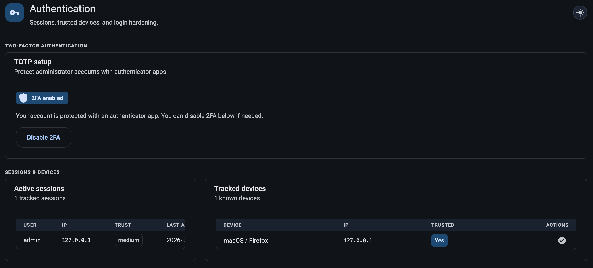
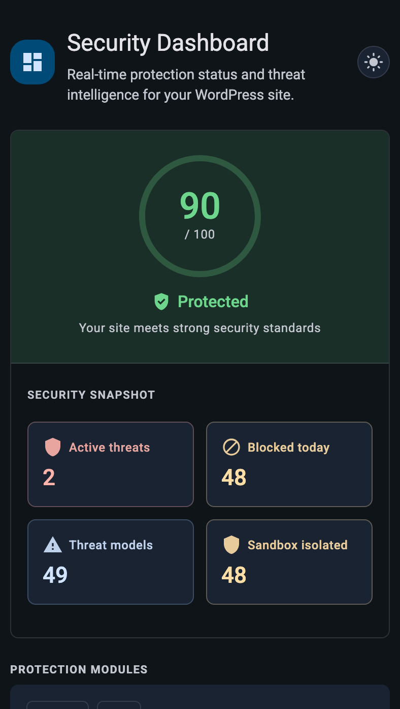
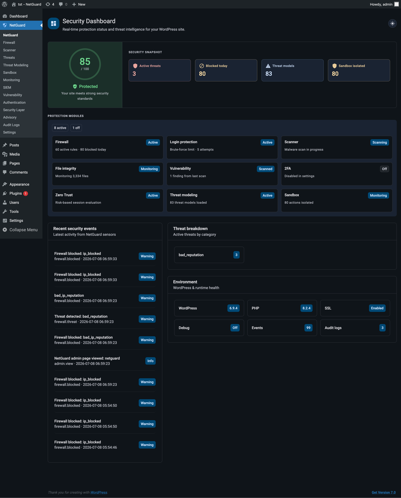
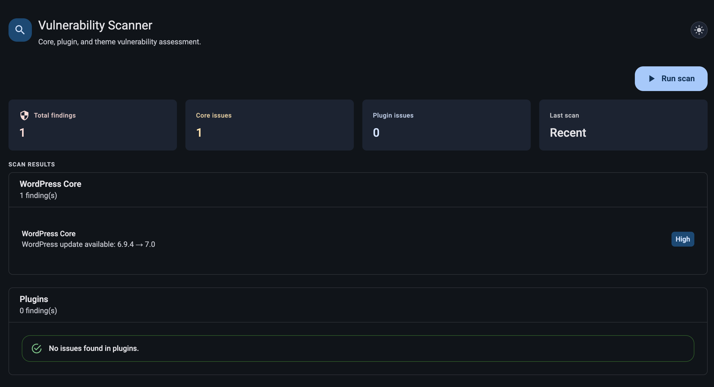
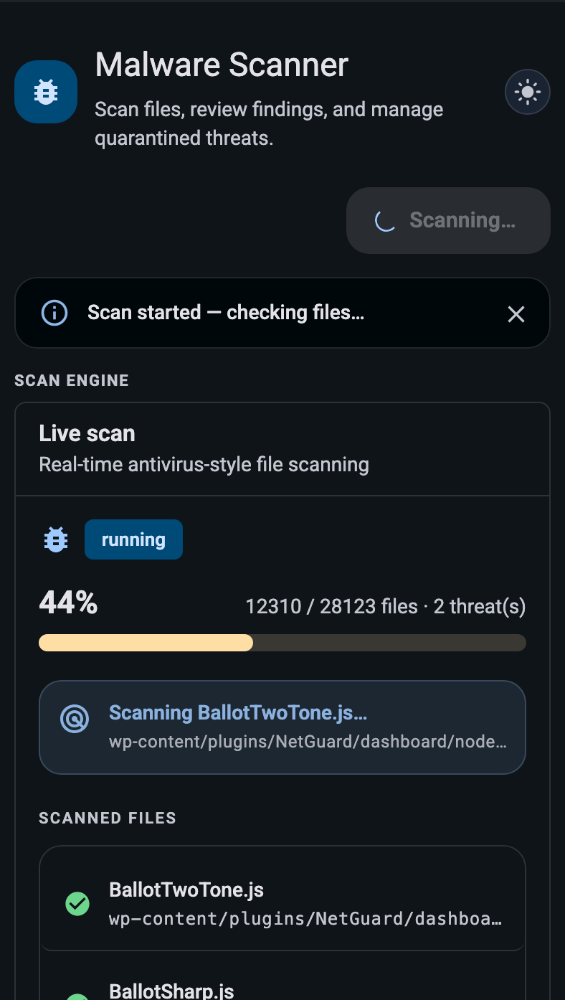
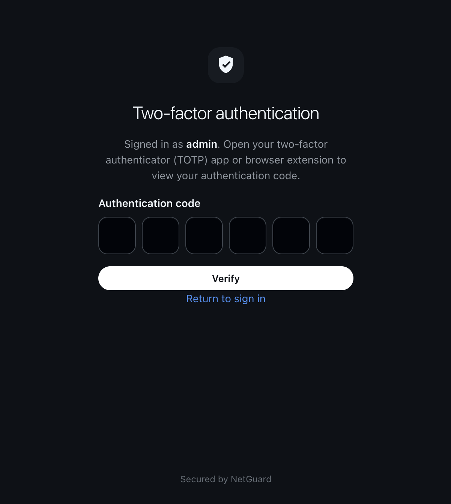
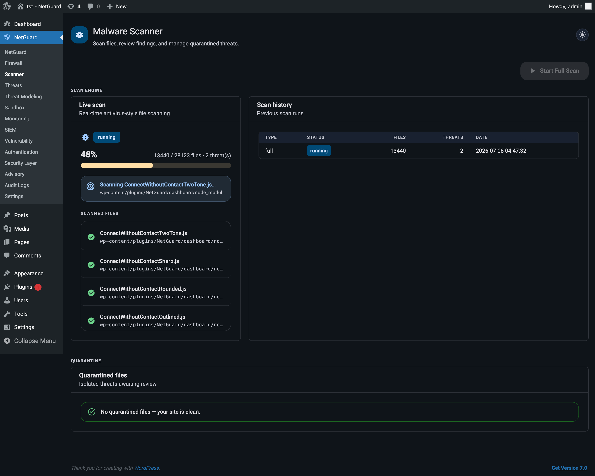
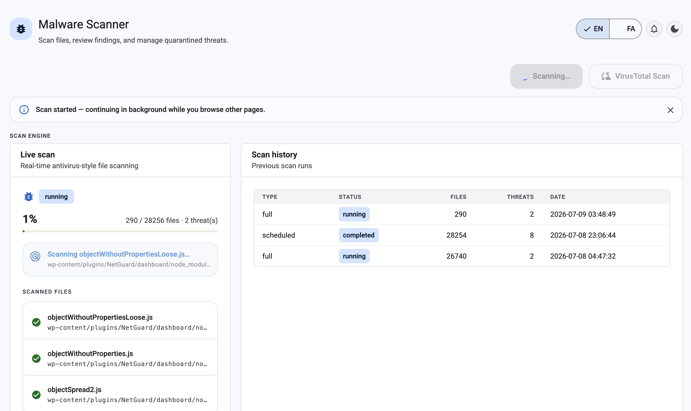

مجموعه امنیتی وردپرس برای وب
نتگارد یک پلتفرم امنیتی ماژولار برای وردپرس است با داشبورد مدیریتی ریاکت، رابط REST API، فایروال WAF، اسکنر بدافزار، زیروتراست و SIEM.
نتگارد چه امکاناتی دارد؟
چهارده ماژول مدیریتی، هفت سرویس هسته پلتفرم و یک لایه امنیتی یکپارچه برای وردپرس.
netguard/v1 برای همه ماژولها؛ ادغام فایروال، اسکن، رویداد، تنظیمات و مانیتورینگ از هر کلاینت یا اتوماسیون.ساختهشده بر پایه ابزارهای سریع و آماده محیط واقعی
netguard/v1 برای همه ماژولها جهت ادغام قوانین فایروال، اسکن، رویداد و تنظیمات.سه لایه محافظتی
نتگارد دفاع وردپرس را در سه سطح پیوسته، از اجرای امن تا کنترل ترافیک، مدیریت میکند.
Sandbox · Security · Network
Sandbox فایلها، افزونهها و عملیات حساس را پیش از اجرا در محیطی ایزوله تحلیل میکند تا ریسک تغییرات مشکوک به سایت منتقل نشود.
Security لایه اصلی دفاع وردپرس را با فایروال، احراز هویت، اسکن بدافزار و مدیریت آسیبپذیریها یکپارچه میسازد.
Network ترافیک ورودی، IPهای پرریسک و درخواستهای غیرعادی را پایش میکند تا فشار حملات پیش از رسیدن به هسته سایت کنترل شود.
خرید از راستچینوقتی امنیت مهم است، انتخاب اول شما








برای محافظت، دیدپذیری و کنترل. نتگارد امنیت در سطح سازمانی را به وردپرس میآورد.